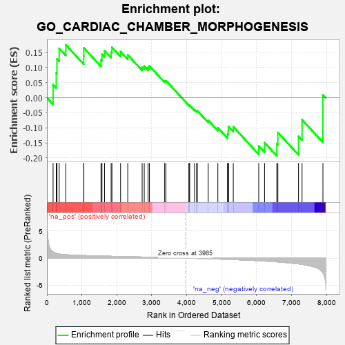
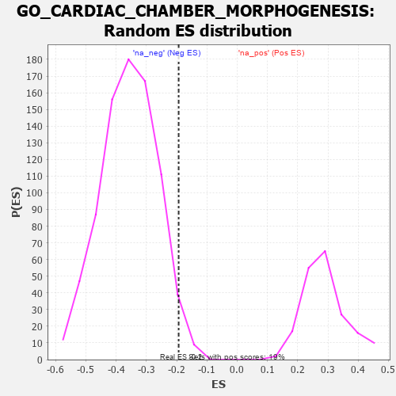

| | | Dataset | 7d |
| Phenotype | NoPhenotypeAvailable |
| Upregulated in class | na_neg |
| GeneSet | GO_CARDIAC_CHAMBER_MORPHOGENESIS |
| Enrichment Score (ES) | -0.1933057 |
| Normalized Enrichment Score (NES) | -0.5411893 |
| Nominal p-value | 0.97153467 |
| FDR q-value | 1.0 |
| FWER p-Value | 1.0 |
Table: GSEA Results Summary

Fig 1: Enrichment plot: GO_CARDIAC_CHAMBER_MORPHOGENESIS
Profile of the Running ES Score & Positions of GeneSet Members on the Rank Ordered List
| PROBE | GENE SYMBOL | GENE_TITLE | RANK IN GENE LIST | RANK METRIC SCORE | RUNNING ES | CORE ENRICHMENT | | 1 | FOXF1 | | | 176 | 1.136 | 0.0433 | Yes |
| 2 | TBX20 | | | 267 | 0.880 | 0.0827 | Yes |
| 3 | SHOX2 | | | 288 | 0.842 | 0.1287 | Yes |
| 4 | GSK3A | | | 351 | 0.745 | 0.1638 | Yes |
| 5 | SRF | | | 542 | 0.615 | 0.1753 | Yes |
| 6 | MEF2C | | | 1054 | 0.473 | 0.1382 | No |
| 7 | RBM15 | | | 1057 | 0.473 | 0.1652 | No |
| 8 | SOS1 | | | 1547 | 0.384 | 0.1257 | No |
| 9 | FZD1 | | | 1574 | 0.379 | 0.1442 | No |
| 10 | RXRA | | | 1647 | 0.365 | 0.1562 | No |
| 11 | GATA4 | | | 1837 | 0.330 | 0.1514 | No |
| 12 | SMAD4 | | | 1860 | 0.326 | 0.1674 | No |
| 13 | BMP7 | | | 2107 | 0.290 | 0.1531 | No |
| 14 | UBE4B | | | 2313 | 0.258 | 0.1422 | No |
| 15 | SLIT2 | | | 2724 | 0.195 | 0.1017 | No |
| 16 | NSD2 | | | 2784 | 0.185 | 0.1050 | No |
| 17 | FGFR2 | | | 2895 | 0.167 | 0.1008 | No |
| 18 | ACVR1 | | | 2932 | 0.161 | 0.1055 | No |
| 19 | SMAD7 | | | 3369 | 0.093 | 0.0559 | No |
| 20 | MED1 | | | 3405 | 0.089 | 0.0566 | No |
| 21 | SFRP2 | | | 4065 | -0.018 | -0.0254 | No |
| 22 | ROBO2 | | | 4066 | -0.018 | -0.0243 | No |
| 23 | WNT2 | | | 4084 | -0.021 | -0.0252 | No |
| 24 | FHL2 | | | 4222 | -0.046 | -0.0399 | No |
| 25 | WNT11 | | | 4282 | -0.056 | -0.0441 | No |
| 26 | TBX2 | | | 4303 | -0.060 | -0.0431 | No |
| 27 | GATA3 | | | 4614 | -0.120 | -0.0753 | No |
| 28 | SLIT3 | | | 4890 | -0.175 | -0.0999 | No |
| 29 | TBX1 | | | 5166 | -0.241 | -0.1206 | No |
| 30 | PARVA | | | 5187 | -0.245 | -0.1090 | No |
| 31 | SMO | | | 5195 | -0.247 | -0.0957 | No |
| 32 | NPY2R | | | 5331 | -0.281 | -0.0965 | No |
| 33 | JAG1 | | | 6060 | -0.494 | -0.1598 | No |
| 34 | TPM1 | | | 6226 | -0.545 | -0.1492 | No |
| 35 | ROBO1 | | | 6577 | -0.699 | -0.1530 | No |
| 36 | MKS1 | | | 6607 | -0.715 | -0.1155 | No |
| 37 | OVOL2 | | | 7197 | -1.068 | -0.1281 | No |
| 38 | MSX2 | | | 7299 | -1.171 | -0.0734 | No |
| 39 | CAV3 | | | 7896 | -2.739 | 0.0095 | No |
Table: GSEA details [plain text format]

Fig 2: GO_CARDIAC_CHAMBER_MORPHOGENESIS: Random ES distribution
Gene set null distribution of ES for GO_CARDIAC_CHAMBER_MORPHOGENESIS